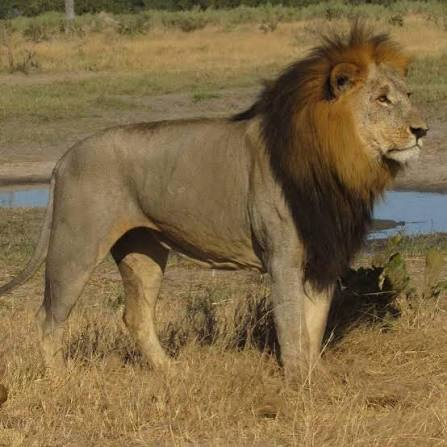
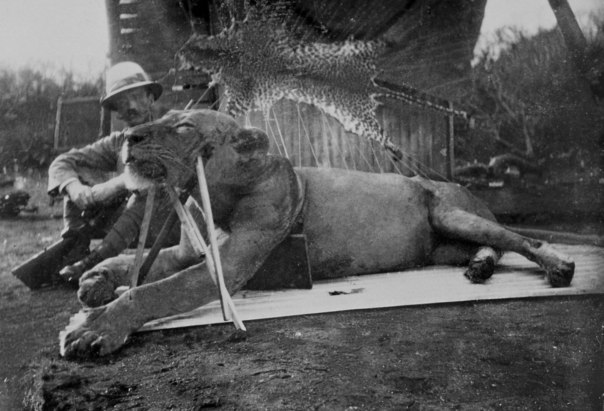
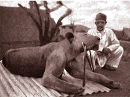
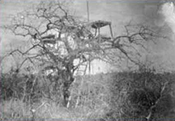
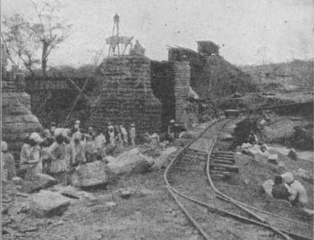
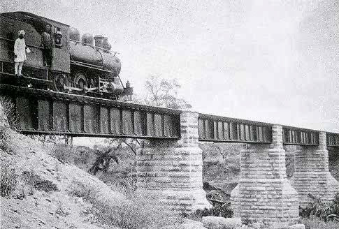
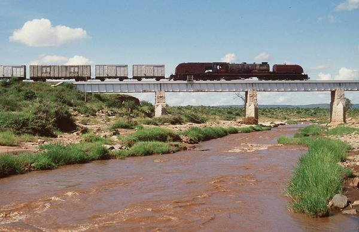
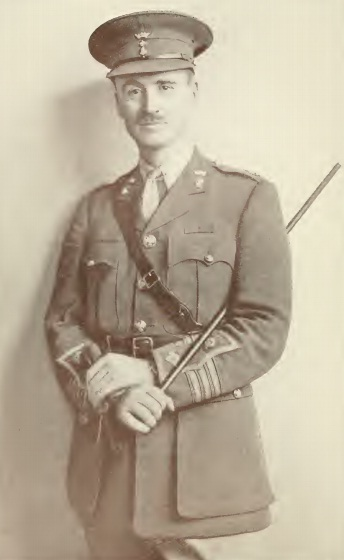

Nesse site eu irei citar algumas histórias antigas e algumas histórias esquecidas que quase ninguém conhece ou nunca ouviu falar, vou citar histórias dos grandes leões da África e suas histórias como se tornaram rei qual foi a primeira luta e como morreram.

.jpg)
Esse Leão ficou conhencido como o grande Rei Leão, por que ele derrotou 179 Leões em 179 lutas. O Nascimento e as Origens : O dia em que nasceu: Scarface nasceu por volta de 2007. Na natureza, é impossível precisar o dia exato, pois as leoas se isolam em densos arbustos para dar à luz e mantêm os filhotes escondidos por semanas. O que se sabe é que ele nasceu em uma ninhada forte na área de Musiara, no norte de Masai Mara. Quem eram os pais: A identidade exata de seu pai e de sua mãe biológica não é registrada individualmente por nomes, mas ele nasceu dentro do famoso bando de Musiara (Musiara Pride). Seus pais eram os machos dominantes daquela região na metade dos anos 2000, e sua linhagem vinha de leões robustos e adaptados à caça de grandes presas.
Diferente do que muitos pensam, um leão raramente domina um território sozinho. Scarface subiu ao poder ao lado de seus três irmãos: Morani, Sikio e Hunter. Juntos, eles formaram uma coalizão lendária apelidada pelos cientistas e guias de "Os Quatro Mosqueteiros". Com uma força combinada formidável, os irmãos marcharam pela savana e conquistaram um território gigantesco de aproximadamente 400 km², assumindo o controle do famoso bando conhecido como Marsh Pride (O Bando do Pântano). Eles destronaram coalizões rivais e garantiram o topo da cadeia alimentar na região.
A famosa marca que lhe deu o nome de "Scarface" (Cara de Cicatriz) surgiu em 2012. Durante uma violenta batalha territorial contra uma coalizão rival que tentava invadir suas terras, Scarface levou a pior em um dos golpes e perdeu a pálpebra direita. O ferimento abriu várias vezes ao longo dos anos devido a novas lutas e ao hábito de coçar, deixando uma cicatriz profunda e permanente que moldou sua expressão ameaçadora e única. Apesar da gravidade da lesão, ele se recuperou e continuou liderando. (Curiosidade: em outro momento da vida, ele também sobreviveu a uma lança de um guerreiro Maasai que defendia seu gado).
O combate mais marcante de sua vida foi justamente a série de confrontos em 2012 contra uma coalizão de leões mais jovens conhecidos como "Os Assassinos" (The Killers). Bandos de leões jovens e nômades costumam destronar os reis mais velhos com facilidade. No entanto, Scarface e seus irmãos lutaram com uma ferocidade brutal. Mesmo saindo gravemente ferido e desfigurado do olho, Scarface e os Mosqueteiros venceram a guerra, expulsaram os invasores e mantiveram o domínio sobre o território.
O declínio do império de Scarface não aconteceu por uma derrota humilhante, mas pelo peso inevitável do tempo: 2017: A coalizão começou a desmoronar quando seu irmão Hunter morreu. Pouco tempo depois, Sikio também faleceu após um combate intenso contra rivais. Restando apenas Scarface e Morani, já idosos e debilitados, eles perderam a capacidade de patrulhar uma área tão vasta. Coalizões de leões mais jovens e vigorosos começaram a morder as fronteiras de suas terras. Sabendo que não podiam mais vencer os novos rivais, Scarface e seu irmão sobrevivente foram gradualmente isolados e perderam o controle do bando principal, tornando-se nômades nos anos finais.
Na natureza, a morte de um leão velho costuma ser brutal — geralmente sendo atacado por hienas ou por machos rivais quando já não consegue se defender. Mas Scarface teve um final digno de realeza. Em seus últimos dias, em junho de 2021, sabendo que sua hora estava chegando, Scarface fez uma caminhada impressionante de quase 25 km de volta ao local exato onde havia nascido. Ele estava visivelmente magro e fraco devido à idade avançada (14 anos, o limite da expectativa de vida de um leão selvagem). No dia 11 de junho de 2021, Scarface deitou-se pacificamente sob a sombra de uma árvore na reserva de Maasai Mara e morreu lá.

Esta é a história de Sekekama, um dos leões mais famosos e implacáveis da África, cuja vida foi documentada na região de Savuti, em Botsuana. Ele ficou mundialmente conhecido pelo documentário Savage Kingdom (Reino Selvagem).
Sekekama nasceu no coração do pântano de Savuti. Ele era membro do Bando do Pântano (Marsh Pride). Na vida real dos leões selvagens documentados, os registros focam na linhagem do bando, e o nome específico de seus pais biológicos não é detalhado como em uma ficção, mas ele herdou a genética dos grandes coalizões de machos que dominavam a região na época.
.jpeg)
Como todo jovem leão, o primeiro grande combate de Sekekama foi a luta pela sobrevivência e pela expulsão de seu bando natal ao atingir a maturidade. Sua ascensão ao trono ocorreu de forma violenta e estratégica. Ele e seus irmãos formaram uma coalizão para desafiar os machos dominantes antigos. Sekekama se destacou por sua força bruta e agressividade incomparável, assumindo a liderança absoluta do Bando do Pântano e tornando-se o "Rei de Savuti".
O reinado de Sekekama foi marcado por uma guerra constante pelo território. Seus principais confrontos foram: A invasão dos Nômades: Lutas brutais contra coalizões rivais de machos jovens que tentavam invadir o pântano. A rivalidade com hienas: O pântano era disputado palmo a palmo com grandes clãs de hienas, gerando batalhas sangrentas por carcaças. O conflito com seus próprios filhos: À medida que seus filhos cresciam, Sekekama passou a enxergá-los como ameaças, resultando em combates violentos dentro do próprio bando para manter o poder.
A primeira grande derrota de Sekekama não veio de um único combate, mas sim do fator tempo. À medida que envelhecia, sua força física começou a diminuir. Ele sofreu uma derrota marcante quando uma nova e jovem coalizão de machos conseguiu encurralá-lo e feri-lo gravemente, forçando-o a recuar e perder parte de seu território absoluto.
A morte de Sekekama seguiu o destino cruel e realista de quase todos os grandes leões alfa. Velho, debilitado por cicatrizes de anos de batalhas e severamente machucado após seus últimos confrontos contra machos mais jovens (incluindo seus próprios descendentes), ele não conseguiu mais caçar ou defender seu território. Ele acabou sucumbindo aos ferimentos e à exaustão no deserto de Savuti.
No contexto dramatizado dos documentários, o "grande segredo" de Sekekama era a sua capacidade de manipulação e sobrevivência política. Ao contrário de outros leões que confiavam apenas na força, o segredo dele era saber exatamente quando recuar, quando usar seus aliados e como dividir para governar. Mesmo quando estava fraco ou machucado, ele conseguia manter o respeito e o medo de seus rivais apenas através de sua presença e reputação, estendendo seu reinado por muito mais tempo do que a média de um leão selvagem.
Vou contar a história do grande evento de leões que ocorreu em 1898 em Tsavo,no Quênia. A história dos Leões de Tsavo é um dos episódios mais impressionantes e assustadores do final do século XIX. Em 1898, durante a construção de uma ferrovia que ligaria o Uganda ao Oceano Índico, dois leões-macho (que não tinham juba, uma característica comum na região de Tsavo) aterrorizaram os trabalhadores.
Por que eles começaram a matar pessoas? Os cientistas e historiadores debatem os motivos até hoje, mas as razões mais aceitas são: Problemas dentários: Exames posteriores nos crânios dos leões mostraram que eles tinham infecções graves nos dentes e mandíbulas, o que tornava a caça de presas naturais (como búfalos e zebras) muito dolorosa e difícil. Humanos eram presas mais fáceis. Escassez de comida: Uma epidemia de peste bovina na época havia dizimado as populações de animais locais Hábitos anteriores: A rota de Tsavo era usada por caravanas de escravos, e os corpos daqueles que morriam pelo caminho costumavam ser deixados para trás, o que pode ter acostumado os leões à carne humana.
A primeira vítima oficial registrada foi um trabalhador indiano chamado Ungan Singh. Ele foi arrancado de dentro de sua tenda à noite por um dos leões. A partir desse momento, os ataques se tornaram frequentes e os leões começaram a demonstrar uma astúcia impressionante, ignorando fogueiras e invadindo cercas de espinhos (bomas) construídas para proteger os operários.
O homem encarregado de parar as feras foi o Tenente-Coronel John Henry Patterson, um engenheiro militar britânico que havia sido contratado para supervisionar a construção da ponte ferroviária sobre o rio Tsavo.
Duração: O terror durou cerca de 9 meses (de março de 1898 até dezembro do mesmo ano). Número de mortes: O número exato é contestado. Patterson afirmou em seu livro que os leões mataram 135 pessoas. No entanto, estudos científicos modernos analisando os ossos dos leões estimam que eles comeram cerca de 28 a 35 pessoas, embora o número de mortos total possa ser maior (já que eles matavam e nem sempre consumiam a vítima inteira).
Patterson passou meses tentando caçar os leões usando armadilhas, veneno e emboscadas em árvores. O sucesso veio apenas em dezembro de 1898:

Patterson construiu uma plataforma elevada (um andaime) perto de onde um trabalhador havia sido morto recentemente. O primeiro leão apareceu e começou a rondar o engenheiro. Patterson conseguiu disparar contra o animal usando um rifle de grosso calibre. O tiro atingiu o leão na carne, mas não o matou imediatamente. Na manhã seguinte, Patterson seguiu os rastros de sangue e encontrou o leão ferido, finalizando-o com mais alguns tiros.

O segundo leão provou ser ainda mais difícil e resiliente. Patterson o encontrou três semanas depois. Ele disparou várias vezes contra o animal de cima de uma árvore. Mesmo baleado repetidamente, o leão fugiu. No dia seguinte, Patterson e seus rastreadores seguiram o bicho. O leão, mesmo gravemente ferido, tentou avançar contra Patterson. O engenheiro disparou mais três vezes: um tiro que o parou, outro no peito e um último na cabeça, que finalmente derrubou o segundo monstro. Nota Histórica: Após a morte dos leões, os trabalhadores que haviam fugido retornaram e a ponte de Tsavo foi concluída. Patterson guardou as peles e os crânios dos animais como tapetes por 25 anos. Em 1924, ele os vendeu para o The Field Museum, em Chicago (EUA), onde os leões foram empalhados e estão em exibição até hoje.
.jpeg)
Essa foto mostra como eles trabalhavam para construir a ponte.

Essa imagem mostra uma platarforma em uma árvore que ele fica lá para matar os leões.

Nesta imagem mostra como a ponte está quase pronta.

Essa imgem mostra a ponte já pronta depois de 9 meses.
.jpg)
Essa imagem mostra onde era o covil dos leões ficavam e levavam as suas vitímas.

Essa imagem mostra como a ponte está atualmente.

Essa imagem mostra a foto do Coronel John Hery Patterson.
Nascimento: Nasceu em 24 de novembro de 1867, em Ballymahon, na Irlanda. Profissão: Ele era militar de carreira e engenheiro civil. Onde serviu: Serviu no Exército Britânico (especificamente nos Yeomanry e nos Royal Engineers). Mais tarde, durante a Primeira Guerra Mundial, ele comandou a Legião Judaica, uma unidade militar britânica.
Esposa: Casou-se com Frances Helena Gray em 1895. Ela era uma mulher muito instruída para a época, tendo inclusive um diploma de direito. Filhos: O casal teve um filho, chamado Bryan Patterson, que nasceu em 1909 e se tornou um paleontólogo bastante renomado nos Estados Unidos.
O Coronel John Henry Patterson faleceu no dia 18 de junho de 1947, aos 79 anos de idade. Ele morreu menos de um ano antes da declaração de independência do Estado de Israel (em 1948), causa pela qual ele havia lutado e trabalhado intensamente nos seus últimos anos de vida.
Ele faleceu em Bel Air, na cidade de Los Angeles, Califórnia, nos Estados Unidos. Patterson havia se mudado para os EUA na sua velhice, onde continuou atuando em organizações de apoio à criação de um Estado judeu.
Patterson morreu de causas naturais, pacificamente enquanto dormia, após enfrentar um período de saúde debilitada na velhice. Sua esposa, Frances Helena, faleceu apenas seis semanas depois dele.
Um detalhe importante, O último desejo de Patterson era ser enterrado junto aos soldados da Legião Judaica (unidade que ele comandou na Primeira Guerra Mundial). Embora tenha sido inicialmente cremado e depositado em Los Angeles, em 2014 suas cinzas e as de sua esposa foram transladadas para Israel e enterradas com honras militares no cemitério do moshav de Avihayil, realizando o seu desejo final.